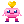
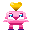

▸ MOCKS CO-PILOTO
Comparação pra você escolher como prosseguir.
Cada sprite tá renderizado em 128/144/160px com pixel-art rendering.
1. CUIDADOR — atual vs refinado 16×16 (caminho A)
Mesmo tamanho, mas com sombreamento triplo (3 tons de rosa), boca sorridente, mãozinhas estendidas (gesto de cuidar) e bochechas mais marcadas. ~30 min/sprite × 7 = 3h pra reproduzir nos 7 eixos.

ATUAL
16×16 · ~30 pixels coloridos

REFINADO
16×16 · ~50 pixels coloridos
2. CUIDADOR — 24×24 (caminho B)
Quase o dobro de pixels (576 vs 256). Espaço pra olhos com reflexo, mais detalhes no corpo, sapatos. Tempo: ~45 min/sprite × 7 = 5h.

24×24
corpo proporcional, olhos detalhados
3. CUIDADOR — 32×32 (caminho C, Stardew-tier)
~1000 pixels úteis. Pode ter sobrancelhas, gradientes, sombreamento mais elaborado. Tempo: ~1h30/sprite × 7 = 10h. Cabe no cronograma só se você topar usar D5 inteiro pra isso.

32×32
sobrancelhas, reflexos, pés definidos
4. HUE-ROTATE — mesmo sprite, cores únicas por aluno
CSS aplica hue-rotate(NgGrau) baseado em hash do codinome. Mesmo desenho, paletas diferentes. Sensação visual de "meu co-piloto é único". 0min de design, 5min de código.
ORIGINAL
hue 0°
+60°
amarelo/verde
+140°
azul/verde
+220°
azul/roxo
+300°
magenta/rosa
5. INVESTIGADOR refinado 16×16 (consistência entre eixos)
Pra você ver se a melhoria escala pros outros co-pilotos: o investigador refinado tem óculos cyan, sensor brilhante, bocha pensativa e — bônus — uma lupa amarela na mãozinha esquerda.

REFINADO
com lupa na mão